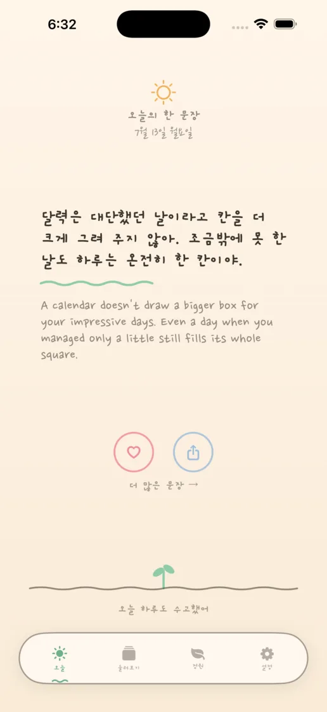
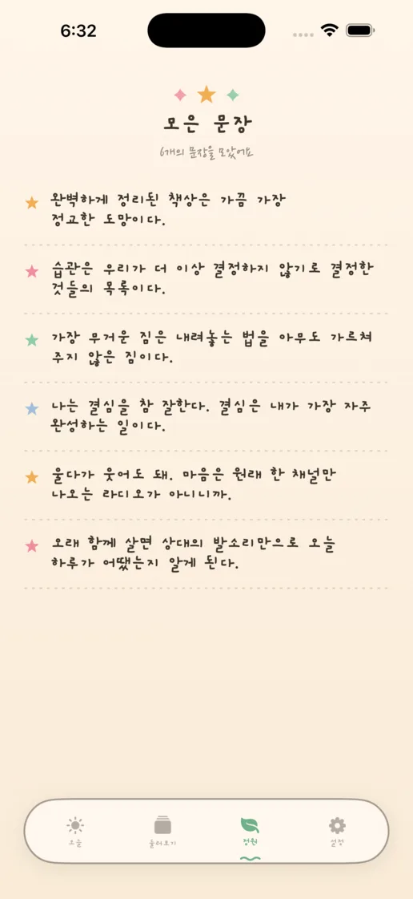
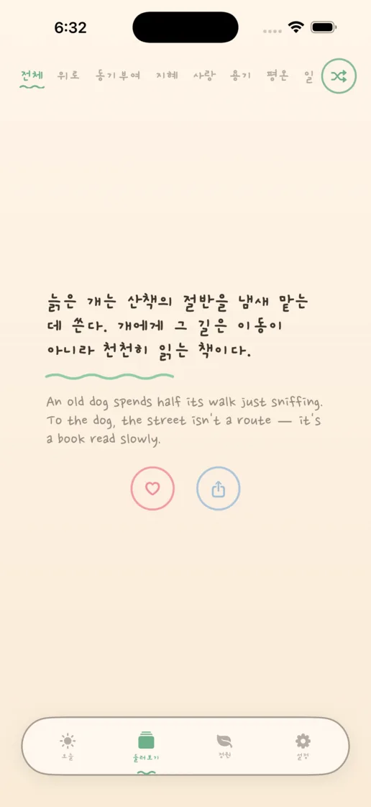
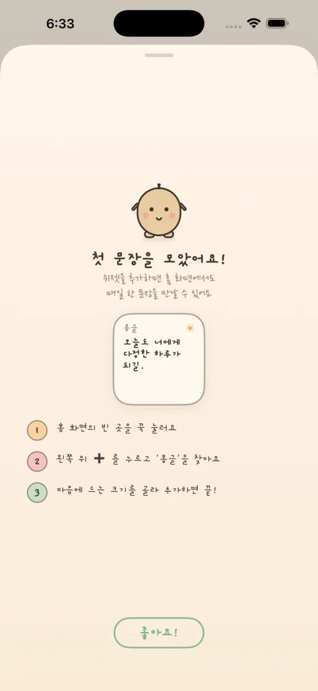
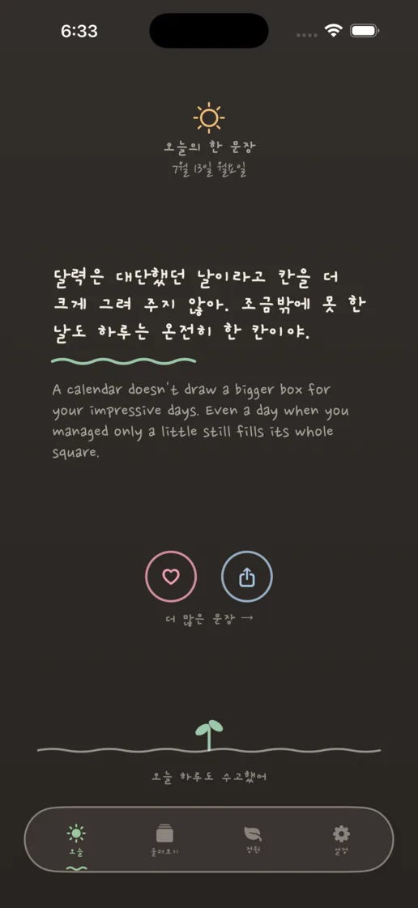
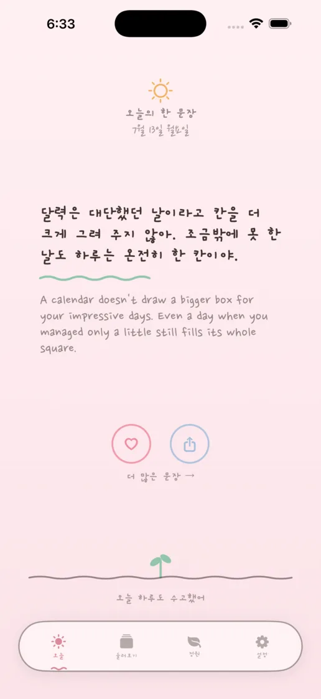

매일 새로운 한 문장
고전의 명언과 몽글이 직접 쓴 문장이 매일 한 번, 잉크가 번지듯 천천히 나타나요.
하루 한 문장, 손으로 쓴 다정함
매일 새로운 문장이 잉크처럼 천천히 종이에 번져요. 마음에 남은 문장은 정원에 모으고, 홈 화면에서도 조용히 만나보세요.
App Store 출시 준비 중한국어 · English · 日本語 · iPhone


작고 고요한 습관
알림과 숫자로 재촉하지 않고, 오늘 필요한 한 문장을 손글씨의 속도로 건넵니다.
고전의 명언과 몽글이 직접 쓴 문장이 매일 한 번, 잉크가 번지듯 천천히 나타나요.
마음에 드는 문장에 하트를 누르면 작은 꽃이 되어 정원에 차곡차곡 피어납니다.
홈·잠금 화면 위젯과 원하는 시간의 로컬 알림으로 앱을 열지 않아도 한 문장을 만나요.
앱 미리보기




좋아하는 문장과 테마, 알림 설정은 오직 내 기기에만 저장됩니다. 몽글은 광고와 사용 분석 없이 완전히 오프라인으로 동작해요.